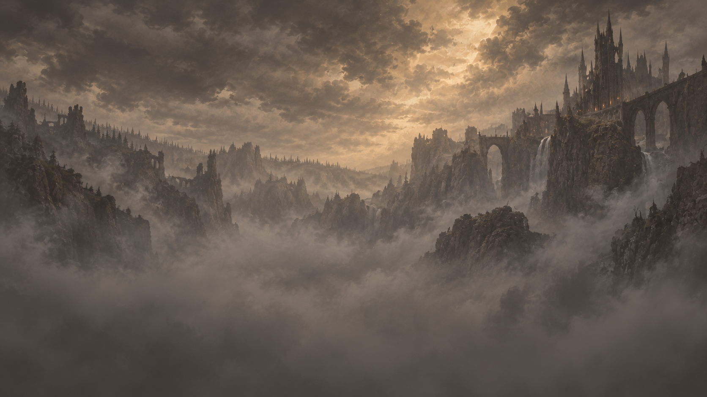
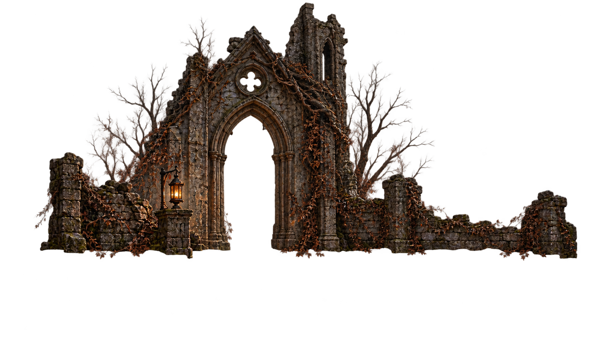
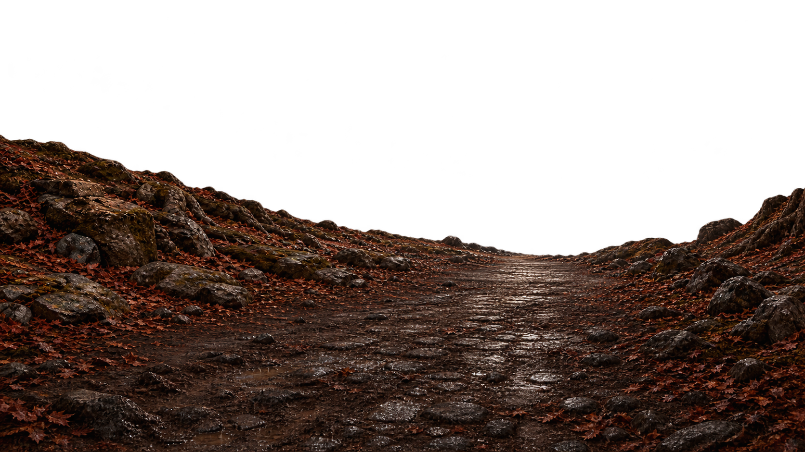
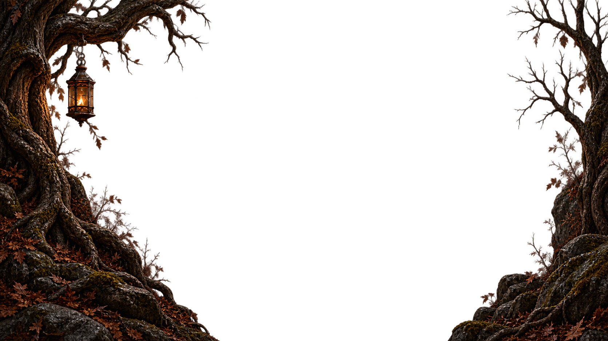
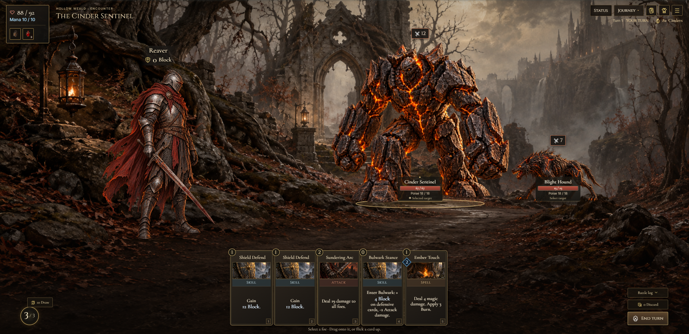
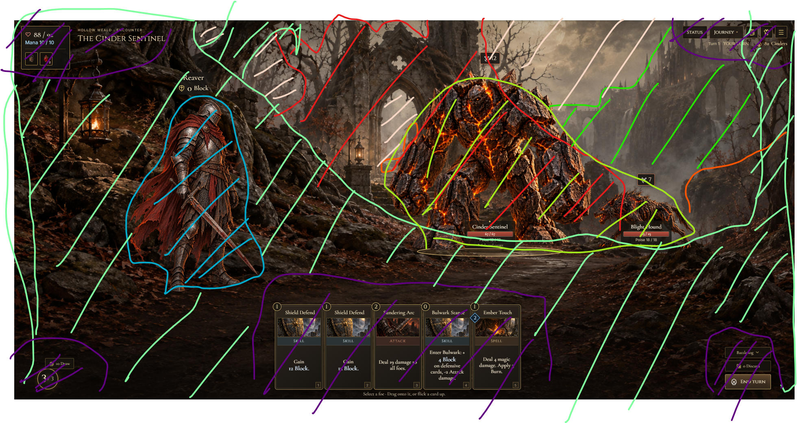

Move the pointer to inspect depth. Figures share measured foot anchors; scene movement does not move the interface.


Additional project reference: TheAshenedSpire. Character identities and armor coverage follow this AshenSpire checkout’s canonical catalogs.